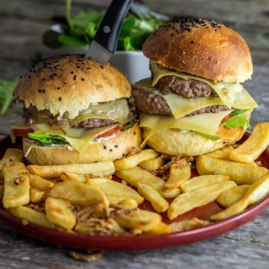

Burger bacon

Ça y est je suis officiellement en week-end!! Histoire de bien commencer le week-end un petit burger ça ne fait pas mal (surtout quand il est fait maison!). je vous propose mon dernier burger en date : le burger bacon, comté et confit d’échalote
Pour ne pas vous mentir je dirais que depuis deux mois environ à la maison chaque samedi il y a un bon hamburger au menu (et j’en connais qui sont plutôt contents!). C’est un peu un super défi pour moi d’avoir les avis des uns et des autres et d’améliorer deux ou trois petites choses pour ensuite partager avec vous les recettes. Je n’aime pas les burgers avec du bacon non vraiment je n’aime pas ça (du moins c’est ce que je pensais). J’en ai pris une seule fois dans un fast-food et j’ai vraiment été écœurée et je m’étais promis de ne plus en manger.
Évidemment il ne faut jamais dire jamais surtout quand on a un chéri capricieux… Me voilà donc entrain de préparer un burger au bacon sans grand enthousiasme en me disant clairement que je n’en mettrai pas dans le mien. Finalement une fois lancée dans ma préparation et un peu dans l’euphorie de la soirée qui s’annonçait, j’ai mis du bacon à tout le monde et on est passé à table.
Waouh Waouh Waooooouh!!! C’était trop trop trop bon non mais franchement dire que j’ai failli mettre le bacon de côté! Je pense que dans ce burger le bacon apporte vraiment ce qu’il faut (surtout s’il est bien grillé) et je pense que mon dégoût venait du fait que c’était un burger de fast-food, qu’il était mal cuit et que tout était vraiment trop gras. Bref chaque bouchée à du sens quand on croque dans ce burger et le petit côté sucré-salé apporté par le confit d’échalote est juste parfait.
Pour le choix du fromage vous pouvez évidemment prendre celui que vous préférez mais si vous faite ce burger je vous conseille vraiment de tester avec des tranches de comté car ça apporte aussi un petit plus et ça n’étouffe pas le reste des saveurs car ce n’est pas un fromage trop fort. Je vous laisse avec la recette, pendant ce temps je m’en vais faire les courses pour un nouveau burger qui trouvera très très rapidement sa place sur le blog alors à très vite et bon week-end!!
Pour la recette des pains hamburger en vidéo rendez-vous ici !
Ingrédients
- Steaks hachés de boeuf - 4
- Tranche de comté - 8 pour les gourmands 4 pour les plus sages
- Tomates - 2
- Salade - 1 grosse poignée
- Cornichons
- Cream cheese - 8 càs (environ)
- Tranches de bacon ou de lard - 8 (si vous en mettez deux par burgers)
- Echalotes - 4-5
- Sucre roux - 2 càs
- Huile d'olive
- Piment d'Espelette - 1 càc
Instructions
- Couper vos pains à hamburgers en deux
- Couper les cornichons en rondelles, ainsi que les tomates et réserver
- Préparer le confit d'échalotes (vous pouvez aussi en acheter du tout prêt) : Couper les échalotes en fines lamelles Dans une poêle faire chauffer de l'huile d'olive (4-5 càs) Y faire suer les échalotes à feu doux (environ 15 minutes). Attention elle ne doivent pas colorer Mélanger régulièrement Ajouter le sucre et une pincée de piment d'Espelette Laisser cuire encore 5 petites minutes toujours à feu doux Sortir du feu et réserver
- Dans une poêle, faites griller le lard ou les tranches de bacon et faites cuire les steaks
- En fin de cuisson déposer une tranche de comté sur les steaks et couper le feu
- Tartiner vos pains hamburgers de cream cheese (Philadelphia,St Môret etc..)
- Sur le cream cheese, étaler du confit d'échalote
- Sur le confit d'échalote, placer un peu de salade suivie de deux rondelles de tomates (si vous n'avez pas la place une suffira)
- Si vous êtes super gourmands comme moi ajouter une tranche de comté sur les tomates
- Poser le steak surmonté de sa tranche de comté
- Tartiner de confit d'échalote et ajouter les cornichons (perso je bloque les cornichons pour ne pas qu'ils tombent dans le cream cheese qui est sur le chapeau)
- Si vous voulez les manger bien chauds, placez-les au four pendant 3-5 minutes (dans un four chaud)
- Déguster sans plus attendre (salade, frites, oignons frits c'est vous qui voyez!)
Les tips de la communauté
Très grand succès avec nombreux retours très positifs. Burger parfait avec excellente combinaison de saveurs, confit d'échalotes très apprécié. Nombreux lecteurs confirmant que c'était excellent.
Astuces
- Le confit d'échalotes est une petite touche indispensable
- Buns maison font toute la différence
- Le Comté est un bon choix de fromage qui fond bien en tranches fines
- Qualité des ingrédients (viande) fait toute la différence
- Bien équitable pour le partage du confit d'échalotes!
Ajustements signalés
- Attention à ne pas oublier le bacon (risque facile selon l'auteure elle-même)